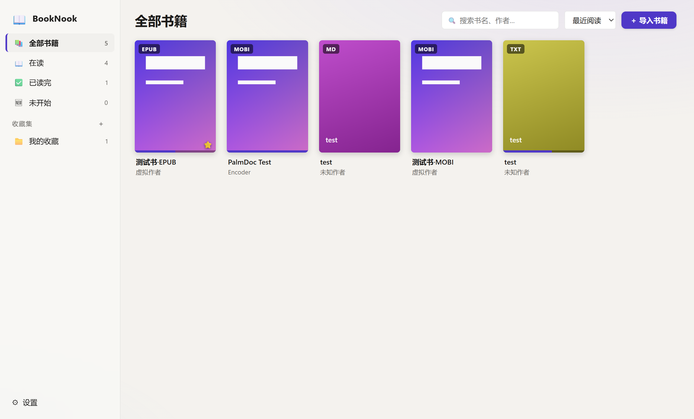
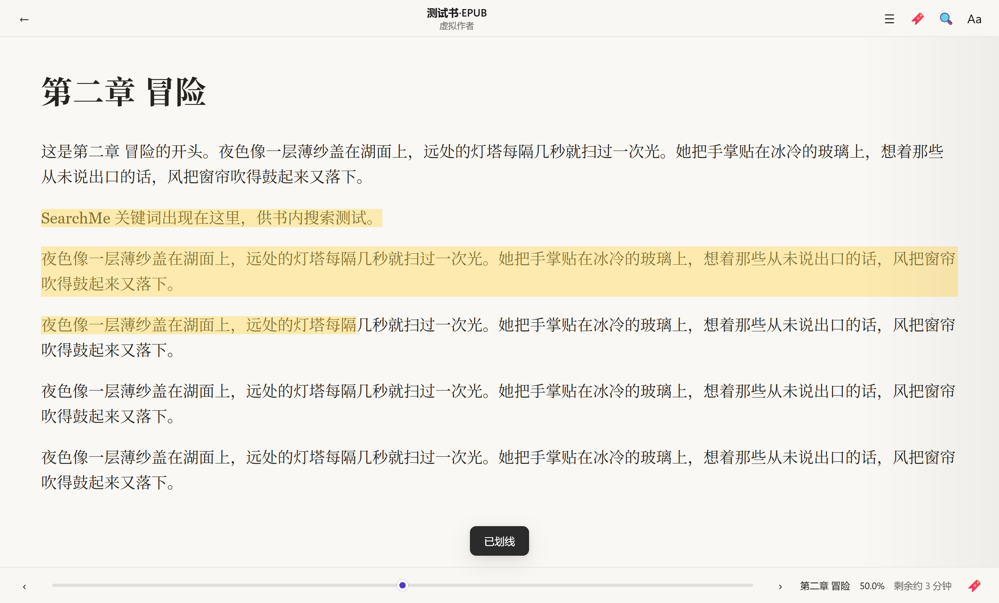
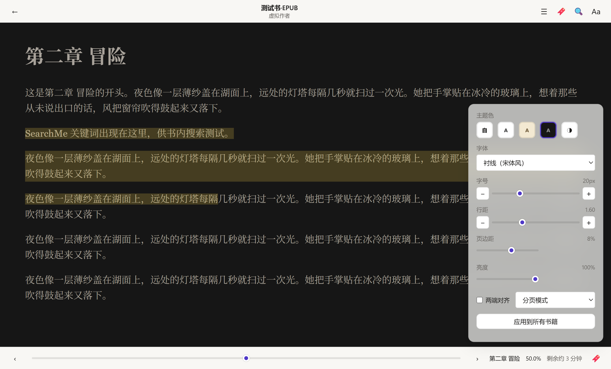

📚 书架
全部书籍 / 在读 / 已读完 / 未开始自动分类，支持自建收藏集、搜索书名作者、按最近阅读排序。进度直接画在封面下沿。
Windows 桌面应用 · v1.0.2 · MIT 开源
一个完全本地的电子书角落。
不联网、不采集、不开会员——
你和你的书，安安静静待着。
没有社区、没有推荐、没有广告位。功能都长在"读"这件事上。
全部书籍 / 在读 / 已读完 / 未开始自动分类，支持自建收藏集、搜索书名作者、按最近阅读排序。进度直接画在封面下沿。
选中即划线，右键加批注、加书签、复制。亮色与深色主题下划线颜色自动适配，不刺眼、不发闷。
章节目录一键跳转，书签带摘录。抽屉展开时正文自动重排，不挡字。
字号、行距、页边距、亮度、衬线/无衬线/楷体/等宽字体、浅色/羊皮纸/深色主题、分页或滚动、宽屏双页。可全局应用，也可为每本书单独设置。
全书关键词检索，关掉软件再打开，回到上次那本书、那一页，还显示"剩余约几分钟"。
所有数据存在你自己电脑上，软件不联网也能完整使用。一键导出 ZIP 备份，换机随时恢复。
克制的米纸底色，紫色书脊点缀，深色模式留给夜晚。



没有框架竞态，没有遥测 SDK。该自己写的解析器，就自己写。
冷知识：第一版 BookNook 从空目录到可运行的 exe，用了 2 小时 37 分钟——和卡尔大叔一起写书的，还有一个不知疲倦的 AI 结对者。
当前版本 v1.0.2（2026-09-24）。
MOBI / AZW3 目录改用书籍自带的 KF8 索引精确定位，老式 MOBI6 自动从书内目录页重建目录；正文里的书内链接（脚注、章节引用）现在可以点击跳转。EPUB 遇到标题是文件名的坏目录时，也会自动从目录页重建。
解析全部移入后台进程池，打开大部头不再卡界面；MOBI 解压提速，EPUB 调进度滑杆不再整本重排；窗口最小化或切到后台时不再出现"假死"；新导入的书立刻出现在书架，无需重启。
新增一键 ZIP 备份与恢复、划线批注增强；修复书签切换、滚轮翻页、右键菜单、悬停箭头等一批交互问题；便携版改为 ZIP 压缩包，解压即用。
Windows 10 / 11 · x64 · 完全免费，无广告无内购。
个人作品尚未购买代码签名证书，SmartScreen 会例行警告。点击弹窗中的「更多信息」→「仍要运行」即可，只此一次。也可用上方 SHA-256 校验文件是否完整。